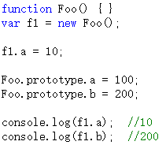
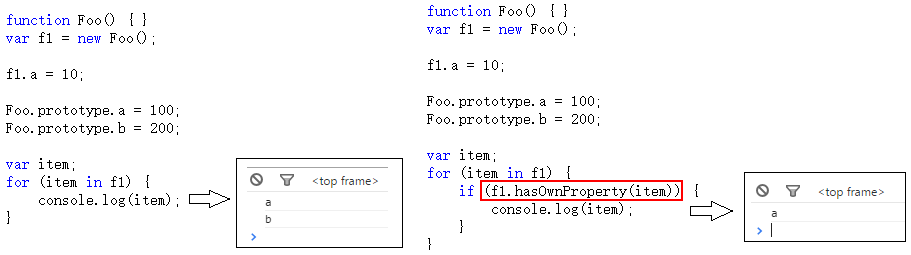
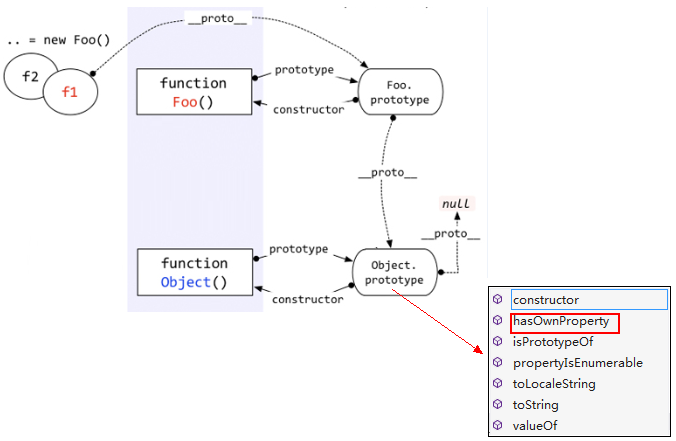
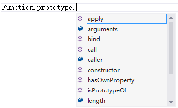

继承
为何用“继承”为标题，而不用“原型链”？
原型链如果解释清楚了很容易理解，不会与常用的java/C#产生混淆。而“继承”确实常用面向对象语言中最基本的概念，但是java中的继承与javascript中的继承又完全是两回事儿。因此，这里把“继承”着重拿出来，就为了体现这个不同。
javascript中的继承是通过原型链来体现的。先看几句代码

以上代码中，f1是Foo函数new出来的对象，f1.a是f1对象的基本属性，f1.b是怎么来的呢？——从Foo.prototype得来，因为f1.proto指向的是Foo.prototype
访问一个对象的属性时，先在基本属性中查找，如果没有，再沿着proto这条链向上找，这就是原型链。
看图说话：

上图中，访问f1.b时，f1的基本属性中没有b，于是沿着proto找到了Foo.prototype.b。
那么我们在实际应用中如何区分一个属性到底是基本的还是从原型中找到的呢？大家可能都知道答案了——hasOwnProperty，特别是在for…in…循环中，一定要注意。

等等，不对！ f1的这个hasOwnProperty方法是从哪里来的？ f1本身没有，Foo.prototype中也没有，哪儿来的？
好问题。
它是从Object.prototype中来的，请看图：

对象的原型链是沿着proto这条线走的，因此在查找f1.hasOwnProperty属性时，就会顺着原型链一直查找到Object.prototype。
由于所有的对象的原型链都会找到Object.prototype，因此所有的对象都会有Object.prototype的方法。这就是所谓的“继承”。
当然这只是一个例子，你可以自定义函数和对象来实现自己的继承。
说一个函数的例子吧。
我们都知道每个函数都有call，apply方法，都有length，arguments，caller等属性。为什么每个函数都有？这肯定是“继承”的。函数由Function函数创建，因此继承的Function.prototype中的方法。不信可以请微软的Visual Studio老师给我们验证一下：

看到了吧，有call、length等这些属性。
那怎么还有hasOwnProperty呢？——那是Function.prototype继承自Object.prototype的方法。有疑问可以看看上一节将instanceof时候那个大图，看看Function.prototype.proto是否指向Object.prototype。
原型、原型链，大家都明白了吗？